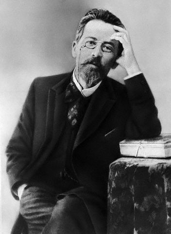

1.
Говорящая фамилия – литературный прием, авторская (т.е отражающая отношение автора) характеристика персонажа с помощью его имени или фамилии. В тексте она делает явный акцент на определенные стороны характера персонажа.
Примеры говорящих фамилий: Ляпкин-Тяпкин, Хлестаков в пьесе Н.В.Гоголя “Ревизор”. Манилов, Собакевич, Ноздрев в поэме Н.В.Гоголя “Мертвые души”.
Выясните происхождение и определите значение фамилий моих персонажей: